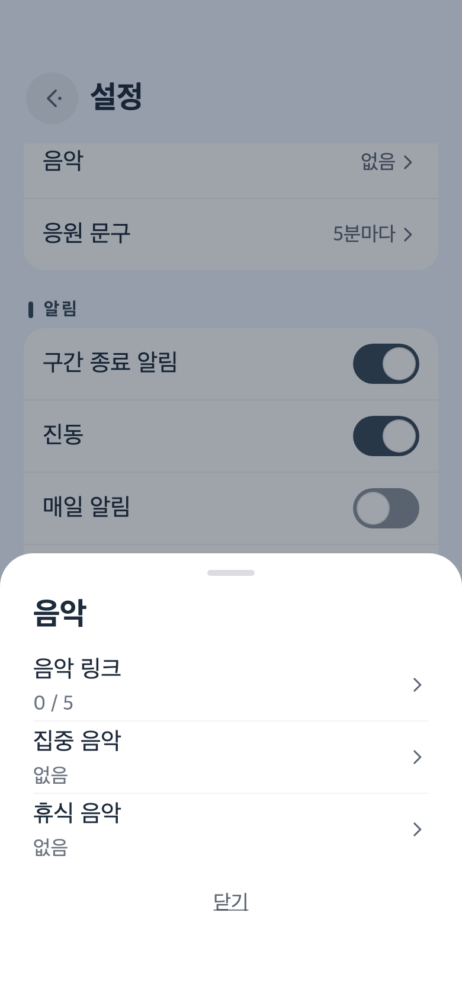
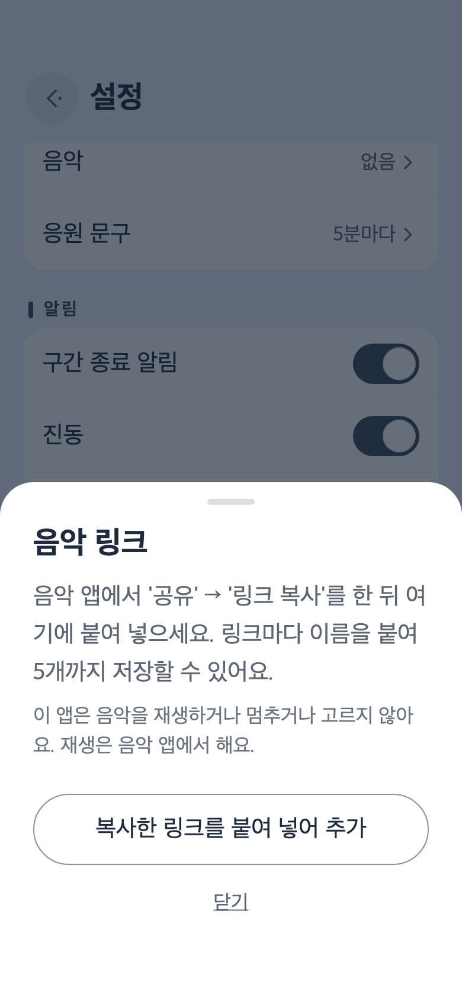
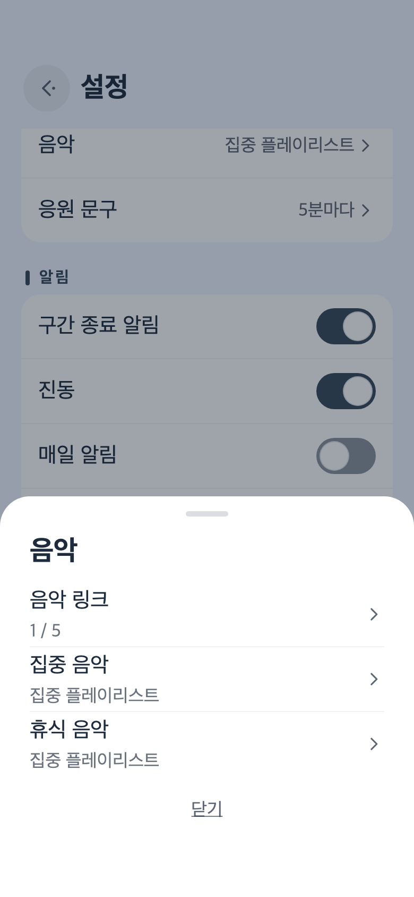
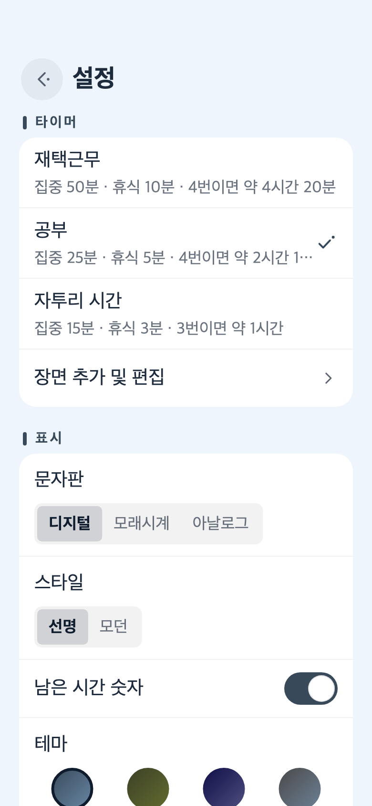

Amazon Music에서 링크 복사하기
- 작업하는 동안 곁에 두고 싶은 플레이리스트나 앨범, 곡을 열어요.
- 공유 버튼을 눌러요. 보이지 않으면 ‘…’ 메뉴 안에 공유가 들어 있어요.
- 나타난 목록에서 링크 복사를 골라요. iPhone에서는 그냥 복사라고만 적혀 있기도 해요.
Take It Easy 도움말
Take It Easy는 소리를 하나도 내지 않아요. 25분을 조용히 세다가, 이따금 짧은 말 몇 마디를 화면에 남겨 둘 뿐이에요. 하는 일은 그게 전부예요. 이 앱과 어떻게 지내면 좋은지, 차례대로 적어 볼게요.
이 앱은 배경 음악을 틀지 않고, 듣고 있는 곡을 멈추지도 않아요. 음악은 평소에 쓰는 앱에 맡겨 두었어요. 대신 자주 듣는 플레이리스트의 링크를 맡겨 두면, 일을 시작하거나 쉬러 가는 순간에 바로 열 수 있어요. 여기서는 Amazon Music을 예로 들어 차례대로 따라가 볼게요.



Amazon Music이 아니어도 괜찮아요. 공유 메뉴에서 링크를 복사할 수 있는 앱이라면 순서는 똑같아요. 플레이리스트뿐 아니라 앨범이나 곡 하나, 스테이션의 링크도 맡겨 둘 수 있어요. 저장할 수 있는 건 다섯 개까지예요. 집중할 때와 쉴 때 서로 다른 음악을 골라 둘 수도 있어요.
링크를 어디서 열지는 휴대폰이 정해요. 음악 앱이 설치되어 있으면 대개 그 앱에서 열려요. 앱이 없거나 휴대폰 설정에 따라서는 브라우저에서 열리기도 해요. 열렸는데 곡이 저절로 시작되지 않으면, 음악 앱에서 재생 버튼을 눌러 주세요.
집에서 오래 앉아 일하는 날과 점심시간의 15분은 알맞은 리듬이 서로 달라요. 설정 › 타이머에서 장면을 고르면 집중 시간, 짧은 휴식, 긴 휴식, 긴 휴식까지의 횟수가 한꺼번에 바뀌어요.
이름과 시간은 장면 추가 및 편집에서 바꿀 수 있어요. 나만의 장면을 더할 수도 있고, 모두 합쳐 다섯 개까지예요. 처음부터 들어 있는 세 가지는 처음 시간으로 되돌리기를 누르면 언제든 원래대로 돌아와요.

버튼은 세 개. 그다음엔 책상 위에 올려 두고 그냥 내버려 두세요.
가운데 둥근 버튼을 누르면 집중이 시작돼요. 시간이 다 되면 화면이 ‘수고했어요!’로 바뀌고, 거기서 휴식으로 넘어갈 수 있어요.
왼쪽 버튼은 처음부터 다시 하고, 오른쪽 버튼은 다음으로 넘어가요. 집중 중이면 휴식으로, 휴식 중이면 집중으로요. 타이머가 돌아가는 중이거나 일시정지 중일 때는 먼저 한 번 물어보니, 잘못 눌러도 잃는 건 없어요.
숫자를 보고 싶지 않을 때도 있고, 잠깐 확인만 하고 싶을 때도 있죠. 타이머를 누르면 남은 시간 숫자가 한동안 나타나거나 사라져요. 설정은 그대로예요.
화면 가운데의 문구는 5분쯤마다 조용히 바뀌어요. 기다리기 어렵다면 문구 언저리 아무 데나 눌러 보세요. 다음 한마디가 나와요.
오른쪽 위의 톱니바퀴에서 열어요. 닫을 때는 왼쪽에서 오른쪽으로 쓸어 넘기면 돼요. 타이머가 도는 동안 톱니바퀴는 모습을 감추고 있어요.
휴대폰을 책상에 세워 작은 탁상시계처럼 쓴다면, 가로로 두는 편이 차분해요.
시간이 다 되면 Take It Easy는 진동과 알림으로 알려 줘요. 알람 소리는 울리지 않아요.
알림을 보내도 될지는 처음 재생을 누를 때 물어봐요. 대답을 기다리지 않고 타이머는 바로 움직이기 시작해요. 나중에 마음이 바뀌면 설정 › 알림으로 가세요. ‘알림이 꺼져 있어요’라고 나와 있다면 시스템 설정 열기를 눌러 거기서 허용해 주세요. 알림 소리는 휴대폰의 알림 설정을 따라요.
정해 둔 시각에, 하루 한 번만 살짝 말을 걸어요. 그날 이미 한 번을 마쳤다면 조용히 있어요.
다른 앱의 알림이 자꾸 어깨를 두드린다면 휴대폰의 집중 모드를 써 보세요. iPhone에서는 제어 센터를 열고 집중 모드를 누른 뒤 방해 금지 모드나 업무를 고르면 돼요. Android에서는 화면 위에서 아래로 두 번 쓸어내리고 방해 금지를 누르세요. 구간 종료 알림은 계속 받고 싶다면 Take It Easy를 허용 앱에 넣어 두세요.
여기에는 광고가 없고, 가입해야 할 계정도 없어요. 이 앱이 책상 위에 자리를 잡았다면 설정 › 기타 › 응원 팁에서 팁을 보낼 수 있어요. 개발을 이어 가는 데 힘이 돼요.
팁은 그때마다 한 번씩 하는 결제예요. 내더라도 기능은 하나도 달라지지 않으니, 나중에 복원할 것도 없어요.
처음부터 소리를 내지 않도록 만들었어요. 시간이 다 되면 진동과 알림으로 알려 줘요. 알림이 오지 않는다면 구간 종료 알림을 살펴봐 주세요.
멈추지 않아요. 이 앱은 오디오와 관련된 부분에 전혀 손대지 않아서, 다른 앱의 음악을 멈추거나 소리를 줄일 수 없어요.
복사한 내용에 https://로 시작하는 링크가 들어 있지 않은 것 같아요. 음악 앱의 공유 메뉴에서 링크를 다시 복사한 다음, 복사한 링크를 붙여 넣어 추가를 한 번 더 눌러 주세요. 링크 앞뒤에 다른 글이 붙어 있어도 링크만 골라서 저장해요.
어떤 앱으로 링크를 열지는 휴대폰이 정해요. 음악 앱이 설치되어 있고 그 앱이 링크를 열도록 허용되어 있으면 앱에서 열려요. 음악 앱을 다시 설치해 보거나, 휴대폰의 ‘기본으로 열기’ 설정을 확인해 보세요.
메인 화면에서 타이머가 도는 동안에는 화면을 켜 둬요. 멈춰 있을 때나 설정, 다른 앱을 열었을 때는 평소처럼 꺼져요.
흘러가요. 끝나는 시각을 먼저 정해 두고 그 순간을 향해 세기 때문에, 다른 앱을 열거나 화면을 꺼도 어긋나지 않아요. 시간이 되면 알림으로 알려 줘요.
설정도, 저장한 링크도, 지금까지의 누적 기록도 휴대폰 안에만 있어요. 자세한 내용은 개인정보 처리방침에 적어 두었어요.
써 보신 소감도, 고장 났다는 소식도 모두 고맙게 읽고 있어요. 가능하면 휴대폰 기종과 OS 버전, 앱 버전(설정 맨 아래에 있어요)을 함께 적어 주세요. 원인을 찾기가 훨씬 쉬워져요.